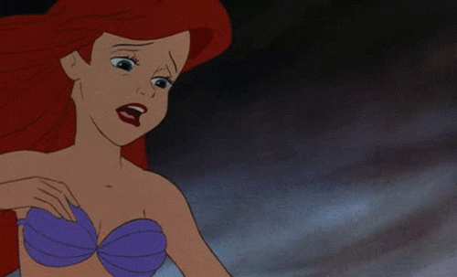

“No,” said the old woman, “unless a man were to love you so much that you were more to him than his father or mother; and if all his thoughts and all his love were fixed upon you, and the priest placed his right hand in yours, and he promised to be true to you here and hereafter, then his soul would glide into your body and you would obtain a share in the future happiness of mankind. He would give a soul to you and retain his own as well; but this can never happen. Your fish’s tail, which amongst us is considered so beautiful, is thought on earth to be quite ugly; they do not know any better, and they think it necessary to have two stout props, which they call legs, in order to be handsome.”
Then the little mermaid sighed, and looked sorrowfully at her fish’s tail. “Let us be happy,” said the old lady, “and dart and spring about during the three hundred years that we have to live, which is really quite long enough; after that we can rest ourselves all the better. This evening we are going to have a court ball.”